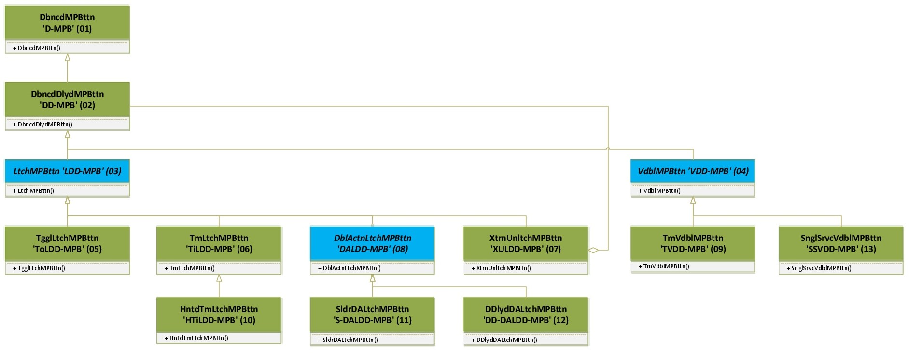

An STM32-RTOS library that builds switch mechanisms replacements out of simple push buttons.
By using just a push button (a.k.a. momentary switches or momentary buttons, MPB for short from here on) the classes implemented in this library will manage, calculate and update different parameters to generate the behavior of standard electromechanical switches, including some well known industry specific switches. Those parameters include presses, releases, timings, counters or secondary inputs readings as needed, and corresponding primary and secondary outputs generated.
The main output flag generated for each and every class is the isOn flag, which defines the Off State (isOn = false) and the On State (isOn = true) of the instantiated objects.
All classes provide several communication mechanisms to keep it's output states available by request and by having their value change automatically notified.
Those mechanisms include:
- Flags value getters: Return the value of each significant output flag.
- General flags value change getter: Returns a value indicating if any of the significant output flags values has changed.
- Binary Semaphore: Implementation of a xTaskNotifyGive() FreeRTOS macro to unblock a developer defined task, every time any of the output flags values is changed.
- Task Resume/Suspend: A mechanism is provided to run a developer defined task while the object is in On State. The designated task will be set to "Suspended State" while the object is in Off State and will be set to "Resume" while it is in On State, providing means to execute far more complex tasks than just "turning On & turning Off" devices.
- Functions execution: A developer defined function might be set to be executed every time the instantiated object enters the On State, and a function might be set to be executed every time the instantiated object enters the Off State. The functions are to be independently defined, so one, the other or both might be defined, and even the same function might be used for both events.
Those listed mechanisms are independent, so one or more might be simultaneously used depending on implementation convenience.
The library implements the following switches behaviors:
- Debounced Momentary Push Button (a.k.a. Momentary switch, a.k.a. Pushbutton)
- Debounced Delayed Momentary Push Button
- Toggle Switch (a.k.a. alternate, a.k.a. latched)
- Timer Toggled (a.k.a. timer switch)
- Hinted Timer Toggled (a.k.a. staircase timer switch)
- External unlatched toggle (a.k.a. Emergency latched)
- Time Voidable Momentary Button (a.k.a. anti-tampering switch)
- Double action On/Off + Slider combo switch (a.k.a. off/on/dimmer, a.k.a. off/on/volume radio switch)
- Double action On/Off + Secondary Debounced Delayed MPB combo switch
MpbAsSwitch Library Documentation available in Github Pages Github Pages

Each instantiated object returns a debounced, deglitched, clean "isOn" signal based on the expected behavior of the simulated switch mechanism.
The system timer will periodically check the input pins associated to the objects and compute the object's output flags, the timer period for that checking is a general parameter that can be changed.
 1.10.0
1.10.0